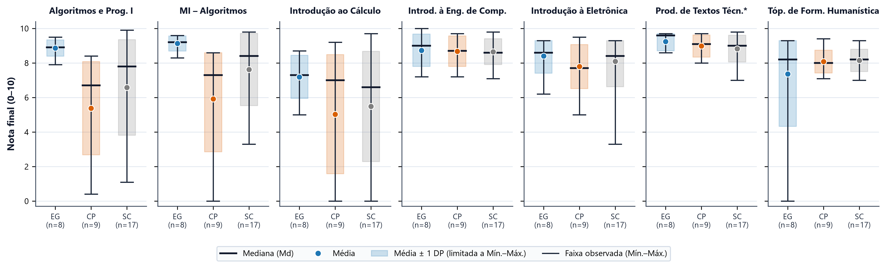

Desempenho Acadêmico no 1º Semestre (Fase 3)
Notas finais agregadas por subgrupo nas sete disciplinas do primeiro semestre de Engenharia de Computação (UEFS): média, desvio padrão, mediana, faixa observada (mín.–máx.) e reprovações por nota ou conceito.

Médias, desvios padrão (DP), medianas (Md) e faixas (Mín.–Máx.) calculados sem os alunos que reprovaram por falta em todas as disciplinas (CP: 2; SC: 2). As reprovações contam todos os respondentes (EG: 8; CP: 11; SC: 19). RE = reprovado por nota; RP = reprovado por conceito; a reprovação por falta (RF) entra nas médias, medianas e faixas como nota zero, exceto nos quatro alunos retirados, e não é contada em RE/RP; trancamentos não constam da base. *Sem as notas de 2026.1, semestre em que a disciplina não foi ministrada.
| Disciplina | EG (n = 8) | CP (n = 9) | SC (n = 17) | Reprovações (RE/RP) | ||||||||
|---|---|---|---|---|---|---|---|---|---|---|---|---|
| Média (DP) | Md | Mín.–Máx. | Média (DP) | Md | Mín.–Máx. | Média (DP) | Md | Mín.–Máx. | EG (n=8) | CP (n=11) | SC (n=19) | |
| Introdução ao Cálculo | 7,19 (1,25) | 7,3 | 5,0–8,7 | 5,03 (3,45) | 7,0 | 0,0–9,2 | 5,48 (3,20) | 6,6 | 0,0–9,7 | 0 | 2 | 6 |
| Tópicos de Formação Humanística | 7,36 (3,04) | 8,2 | 0,0–9,3 | 8,08 (0,66) | 8,0 | 7,1–9,4 | 8,15 (0,65) | 8,2 | 7,0–9,3 | 0 | 0 | 0 |
| Algoritmos e Programação I | 8,86 (0,47) | 8,9 | 7,9–9,5 | 5,38 (2,70) | 6,7 | 0,4–8,4 | 6,58 (2,77) | 7,8 | 1,1–9,9 | 0 | 4 | 4 |
| MI – Algoritmos | 9,13 (0,44) | 9,2 | 8,3–9,6 | 5,92 (3,07) | 7,3 | 0,0–8,6 | 7,62 (2,09) | 8,4 | 3,3–9,8 | 0 | 2 | 2 |
| Introdução à Eng. de Computação | 8,73 (0,94) | 9,0 | 7,2–10,0 | 8,68 (0,88) | 8,7 | 7,2–9,7 | 8,65 (0,75) | 8,6 | 7,1–9,8 | 0 | 0 | 0 |
| Introdução à Eletrônica | 8,40 (0,99) | 8,6 | 6,2–9,3 | 7,79 (1,28) | 7,7 | 5,0–9,5 | 8,09 (1,47) | 8,4 | 3,3–9,3 | 0 | 0 | 1 |
| Prod. de Textos Técn. e Acad.* | 9,24 (0,54) | 9,6 | 8,6–9,7 | 8,98 (0,64) | 9,1 | 8,0–9,7 | 8,83 (0,78) | 9,0 | 7,0–9,8 | 0 | 0 | 0 |